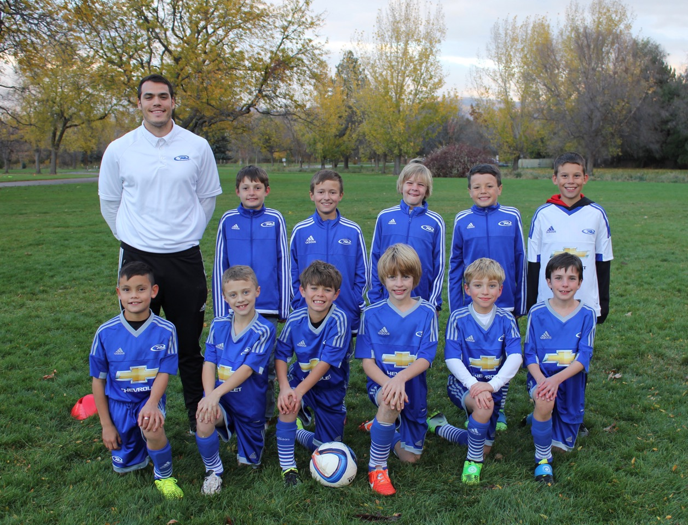

Welcome, To MyDesign!
MyDesign was founded and owned by David Lowber. MyDesign is a new, up and coming company aimed to create top of the line application and web sites.
Here we collaborate with our customer to help build what they want and make their dreams a reality. Check out demonstration of MyDesign’s skills by navigating to Technical Examples, or see our qualification by viewing certification.
MEET THE TEAM!
|  | David Lowber Greetings! My name is David Lowber, Founder and Owner of MyDesign Technology. Two years ago I entered the Software Development program at College of Western Idaho. Over those two years I have enjoyed learning and developing my own software. In my free time I Coach a Competitive u10 Premier team for Idaho Rush. Coaching is a passion of mine, I have been playing soccer competitively for 15 years and enjoy passing my knowledge on to our youth. Feel free to check out my online resume here. |
| ScreenShot CMS | ScreenShot Batman Informational | ScreenShot Disc Inventory |
Content Management System: Theatrical ReviewsCreated with Joomla, this Content Management System demonstrates the use of adding articles, categories, menus and plug-ins. |
HTML, CSS, and JavaScript: Batman InformationalUsing skills in HTML, CSS, and JavaScript, MyDesign has created a site that informs users on the vigilantly of Gotham. |
MySql, PHP and ASP: Disk InventoryCreating Databases in MySQL, using PHP and ASP to View, Update, Delete and ADD to Tables are skills displayed in Disk Inventory. ScreenShots are provided for viewing. |
MyDesign is proud to share with our customers and future employers are qualifications. Below are Certificates, degrees and achievements we have earned over the years. Along with titles you will also see the latest date completed so as customers you will always know that MyDesign is up to date in the latest Technology.
| Associates Degree of Applied Sciences in Software Development Date Completed: 04/29/2016 |
MTA: Fundamentals of Database Certification Date Completed: 12/14/2015 |
MTA: HTML5 Application Development Fundamentals Date Completed: 03/08/2016 |
David Lowber
Software Developer
2 years of Experience
|
"An eager new Developer looking to practice his skills and continue to learn!" |
CONTACTPhone: 208-850-3370 |
| WORK EXPERIENCE | |
|---|---|
| 2007 - 2011 | WDS GlobalTechincal Support RepresentativeBoise, ID United States |
| 2014 - Present | Idaho Rush SoccerPremier Head CoachBoisek, ID United States |
| Education | |
| 2014 - 2016 | Associates Degree in Applied Science for Software DevelopmentJenny WokersienADA Campus - Boise, ID United States |